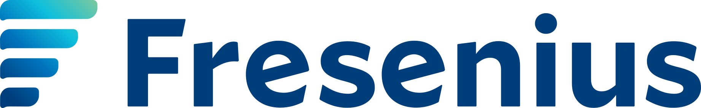

2001 – 2009
Werkbank
Werkzeugmechaniker bei Audi und Daimler, gelernt bei Audi.
Ich kenne die Werkhalle von innen.
Hunter im Neugeschäft, Farmer im Account-Ausbau. Titel je nach Arbeitgeber: Account Director, Key Account Manager.
Sieben Jahre B2B-Vertrieb, gelernt in der Personalvermittlung: Bedarf verstehen, Rahmenverträge schließen, Projekte liefern. Seit 2025 baue ich die Software, die diese Arbeit trägt — und verkaufe nichts mehr, was ich nicht selbst durchdrungen habe.
Sieben Jahre, zwölf Branchen, ein Muster: komplexer Bedarf, technische Entscheider, lange Zyklen. Vom Schienenfahrzeugbau bis zur Modemarke — verkauft wird in jeder Branche anders.


Ausschnitt — die größten Namen aus sieben Jahren.
Jagen und entwickeln sind gegensätzliche Arbeitsweisen: Die eine braucht Ausdauer gegen Ablehnung, die andere Geduld über Jahre. Ich habe beide Seiten verantwortet — und für beide eigene Werkzeuge gebaut.
Von der leeren Liste zum unterschriebenen Vertrag. Zwei Standorte habe ich von null aufgebaut — Österreich für Elevate Global, die Niederlassung Wiener Neustadt für Adecco.
Aus einem Auftrag einen Rahmenvertrag machen, aus einer Abteilung einen Konzern. Bestandskunden wachsen nur, wenn die Lieferung stimmt — deshalb hört meine Verantwortung nicht beim Abschluss auf.
Ich komme aus der Personalvermittlung. Dort lernt man das Handwerk, auf das es im Softwarevertrieb ankommt: Bedarf auseinandernehmen, Anforderung und Lösung zusammenbringen, Vertrag, Lieferung, Governance. 2025 habe ich angefangen, genau diesen Prozess als Software zu bauen — Recherche, Qualifizierung, Nachfassen, Compliance-Prüfung. Seitdem verkaufe ich Technologie nicht mehr aus der Broschüre, sondern aus der eigenen Werkstatt.
Werkzeugmechaniker bei Audi und Daimler, gelernt bei Audi.
Diplom-Kaufmann (BWL) und MBA E-Business & E-Entrepreneurship, Universität Duisburg-Essen.
Verkaufsberater bei Sky, ORS, LG Electronics und MediaMarktSaturn.
Breakthrough Service: Projektmanager & Sales Enablement Lead, österreichweite Trainings für LG.
Elevate Global DACH, zuletzt Account Director: Standort Österreich aufgebaut, DACH-Team geführt, Ausschreibungen für ÖBB und WKO.
Heinemann (Travel Retail): HR Business Partner für ~500 Mitarbeitende an drei Flughäfen, ATOSS eingeführt.
Adecco: Niederlassung Wiener Neustadt als alleiniger Key Account Manager aufgebaut. Parallel Mitgestaltung bei Wired Geist (EU-gehostete KI-Automatisierungsplattform): Frontend per Vibe Coding, Ideen für Prozessketten.
IVM: Senior Key Account Manager für IT, Engineering & AI Solutions in Industrie und Bahn. Discovery mit HR und Geschäftsführung, Prozess- und Kompetenzanalyse, AI-Integrations-Consulting für HR-Prozesse und Workflow-Automatisierung (mit Expertenteam). Eigene Werkzeuge: SalesGeist, TalentBridge.
In den meisten Organisationen sind das vier verschiedene Rollen: SDR, Account Executive, Solution Engineer, Customer Success. Ich bringe die Kette in einer Person mit — und die Software, die sie schneller macht.
Keines davon ist aus einer Produktidee entstanden, sondern aus einer Stelle, an der meine eigene Arbeit zu langsam war. Sie laufen im Tagesgeschäft. Sie sind nebenberuflich als Labor entstanden und fließen heute in meine Kundenarbeit ein — mein Labor für das, was ich bei IVM an Kunden verkaufe: KI-Integration und Automatisierung für HR-Prozesse.
Findet und qualifiziert Firmen und Ansprechpartner, belegt jeden Fakt mit Quelle und lässt einen zweiten Agenten gegenprüfen. Prüft zusätzlich auf Compliance-Pflichten und offene Förderungen — als Gesprächsaufhänger. Von der Recherche bis zur Kundenreise (kalt → warm → heiß → Kunde) mit Dashboard und Forecast. Versendet wird nie automatisch, sondern immer per Klick. Live bei einer ersten Pilotkundin im Einsatz (Case Study).
Gleicht Kandidatenprofile gegen Stellenanforderungen ab und zeigt per Ampel, wo es passt und wo nicht — zweisprachig, DE und EN.
Prüft Geschäftspartner gegen offizielle Sanktions- und PEP-Listen und begründet jedes Urteil mit der Quelle.
Gibt meinen Agenten freien Internetzugriff ohne API-Schlüssel und ohne laufende Kosten: Websuche, Seiten lesen, GitHub-Suche, YouTube-Transkripte.
Marktanalyse nur mit Beweis: Jede Zahl braucht Quelle, wörtliches Zitat und Rohdatei, sonst fliegt sie raus. Zuletzt 1.255 von 1.259 Belegen bestanden die automatische Prüfung.
Ich verkaufe keine Technologie, die ich nur erklären kann.
Eine Liste, in der alles gleich gewichtet ist, sagt nichts. Deshalb nach Tiefe sortiert: was täglich läuft, was ich hole wenn die Aufgabe es verlangt, und was fachliches Fundament ist.
Was ich nicht bin: Softwarearchitekt für Systeme mit tausend Nutzern. Ich baue Werkzeuge, die meine eigene Arbeit tragen — und ich weiß genau, wo diese Grenze verläuft. Genau das macht mich in technischen Gesprächen glaubwürdig: Ich kann mitreden, ohne zu behaupten, was ich nicht liefern kann.